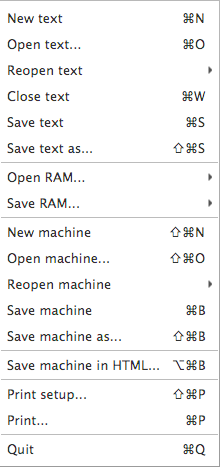

The File menu (see Figure 10) provides the usual items for loading new or existing machines, opening or closing text windows containing assembly language programs, printing and displaying information about the machine or programs, and exiting CPU Sim.

Figure 10. The File menu.
Note:
New text
The "New text" menu item causes CPU Sim to create and open an empty text window in which the user can type a new assembly language program.
The text window is like any basic text editor window, including the usual cutting, copying, and pasting and an arbitrary number of undo's and redo's.
The text window that appears can be changed (font, font size, background color, etc.) by editing the preferences in the Preferences dialog from the Edit menu.
Open text...
The "Open text..." menu item displays a dialog box asking you to choose a file. You will normally select a text file in which you had previously saved an assembly language program.
Reopen text
The "Reopen text" menu contains a list of the 10 most recently opened text files. This list is saved on your computer between sessions, so that when you quit CPU Sim and restart it later, the "Reopen text" menu will be populated with the same list as it had when you quit CPU Sim.
Close text
The "Close text" menu item closes the selected text tab. If the contents of the window have been changed since the window was last saved, the user is presented with a dialog box asking whether you wish to save the contents first.
Save text
The "Save text" menu item saves the contents of the selected tab to a text file. If the user has not already saved the contents to a file, a dialog box is displayed asking the user to select a name and location for the file.
Save text as...
The "Save text as..." menu item displays a dialog box asking you to choose a file into which the contents of the selected tab will be saved.
Open/Save RAM
The "Open RAM" and "Save RAM" menu items open submenus, which each have items for opening/saving (whichever is applicable) from each of the RAMs in the current machine. If there is only one RAM in your machine, there will only be one option for opening/saving in each submenu. Opening into a certain RAM will allow the user to pick a .mif or .hex file to open into the specified RAM. Saving from a specified RAM will pop up a Dialog asking the user to choose how they would like the RAM saved. It can be saved in either .mif or .hex format.
New machine
The "New machine" menu item causes CPU Sim to create a new machine with no hardware (registers, register arrays, condition bits, or RAMs), no machine instructions, and only one microinstruction ("End").
Open machine...
The "Open machine..." menu item displays a dialog box asking you to choose a file. You should select a file in which you had previously saved a machine through the use of the "Save machine" or "Save machine as..." menu items.
Reopen machine
The "Reopen machine" menu contains a list of the 10 most recently opened machine files. This list is saved on your computer between sessions, so that when you quit CPU Sim and restart it later, the "Reopen machine" menu will be populated with the same list as it had when you quit CPU Sim.
Save machine
The "Save machine" menu item saves the current machine in a text file in XML format. If the current machine has never been saved to a file before, a dialog box appears asking you to type in the name of the file into which the machine will be saved.
Save machine as...
The "Save machine as..." menu item presents you with a dialog box asking you to type in the name of the file into which the machine will be saved.
Save machine in HTML...
The "Save machine in HTML..." menu item creates a new HTML document containing a user-friendly description of the current machine, including all its details. The HTML document can be opened and viewed using any web browser.
Page setup...
The "Print Setup..." menu item brings up the usual page setup dialog, from which you can set the page size, reduction or enlargement, and other printing options. Currently, only the page orientation (portrait vs landscape) feature works.
Print...
The "Print..." menu item brings up the usual print dialog for printing the contents of the selected assembly language window in the center of the main desktop. To print the contents in a smaller or larger font, change the font used by the assembly language window using the Preferences dialog. Note that the printer does not wrap the text, regardless of whether the window wraps the text. Therefore, if a line is too long, the characters at the end of the line will not be printed. To indicate that such truncation has occurred, a small rectangle will appear in the upper left corner of the printout over the first few line numbers if you are printing the line numbers.
Quit
The "Quit" menu item causes CPU Sim to quit. If changes have been made to the currently loaded machine since the last time you saved it, CPU Sim asks you whether you want to save the current machine before quitting. Similarly, if changes have been made to any open assembly language window since the last time you saved it, CPU Sim asks you whether you want to save the contents before quitting.
Note that on Macintoshes, the "Quit" menu item is not in the File menu and instead is moved to the Application menu (the leftmost menu, entitled "CPU Sim").